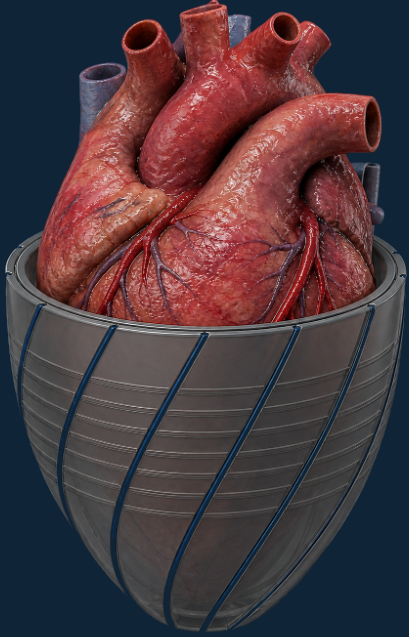
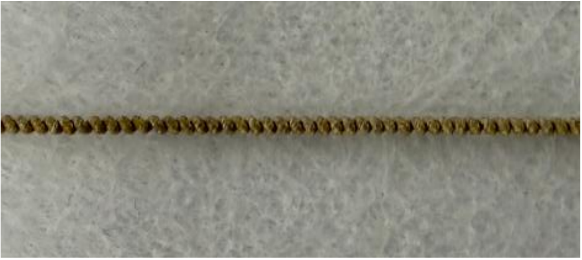
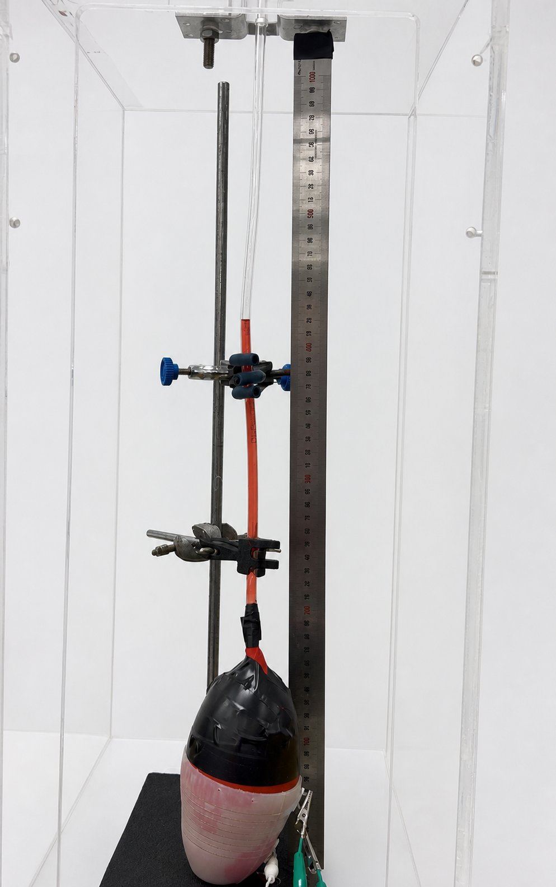
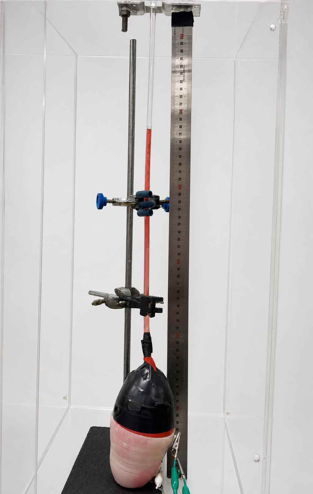

UNSW Sydney · Mechanical Engineering · 2026
Bio-Inspired
Soft Robotic Heart Sleeve
A soft robotic sleeve actuated by thermally driven twisted and coiled artificial muscles (TCAMs), developed as a proof of concept for external cardiac assistance. Actuator testing, silicone fabrication and nonlinear finite element analysis (FEA) supported development of a prototype evaluated on a water-filled flexible chamber.

Concept visualisation
Concept illustration of a sleeve surrounding the heart. The experimental prototype is shown below.
Project overview
From actuator characterisation
to prototype testing.
The project investigated whether thermally driven actuator contraction could be transferred through a silicone sleeve to compress a flexible chamber.
Actuator development
Fabricated TCAM actuators and characterised their thermal contraction response.
Mechanical design
Designed the sleeve geometry and actuator arrangement in CAD.
Finite element analysis
Compared large-deformation behaviour and force transfer between design concepts.
Prototype fabrication
Produced moulded silicone components and assembled the integrated device.
Experimental validation
Built a benchtop rig and measured water-column displacement over repeated actuation and cooling cycles.
Design evaluation
Examined how sleeve deformation and actuator integration affected prototype performance.
Project scope
Design, simulation,
fabrication and testing.
Artificial muscle
Actuator fabrication, thermal characterisation and contraction testing.
Mechanical design
CAD modelling, soft-structure design and prototype integration.
Nonlinear FEA
Large-deformation modelling used to compare structural response and force transfer.
Manufacturing
Silicone moulding, actuator integration and prototype assembly.
Experimental testing
Custom test rig, repeated measurements and comparison of prototype configurations.
Engineering analysis
Used experimental observations and FEA together to assess system performance.
Artificial muscle characterisation
Standalone actuator
characterisation.
Standalone tests characterised the actuator’s axial contraction before integration into the sleeve. These measurements provided a baseline for assessing its response under the constraints of the assembled device.

Maximum actuator contraction
Standalone testing yielded a maximum axial contraction of 12.4% relative to the initial actuator length.
Benchtop testing
Integrated sleeve testing
on a flexible chamber.
The sleeve surrounded a water-filled flexible chamber connected to a transparent tube. Actuation displaced water into the tube, and the change in meniscus position was recorded to assess the prototype’s response.
Maximum measured rise
64 mm
The maximum water-column rise recorded during prototype testing was 64 mm.
Artificial-muscle actuation→Sleeve contraction→Fluid displacement→Water-column rise
Experimental results
Actuator and prototype test results.
Actuation produced a rise in the water column, consistent with compression of the flexible chamber. Maximum responses from the standalone actuator and integrated prototype tests are summarised below.

Maximum recorded rise64 mmwater-column rise

Maximum measured contraction during standalone actuator characterisation.
Maximum measured water-column rise during benchtop testing.
Three trials were conducted at each test condition.
The water level fell towards its initial position during cooling.
Measurement interpretation
Water-column displacement was the measured output of the chamber test. For a tube of uniform internal cross-sectional area A, displaced volume can be estimated as ΔV = A · Δh, where Δh is the displacement along the tube. Estimating chamber-volume change additionally requires accounting for leakage, trapped air, tubing compliance and thermal expansion.
The photographs illustrate the chamber before and after actuation; the numerical result is the maximum recorded across the test series.
Design evaluation
Evaluating deformation
and force transfer.
Prototype configurations produced different water-column displacements. Nonlinear FEA was used to examine deformation and explore how actuator forces were transmitted through the sleeve, providing a qualitative basis for interpreting the experimental observations.
Repeated chamber tests provided an initial comparison of the outputs obtained with different configurations.
Large-deformation simulations were used to examine sleeve deformation and potential limitations in force transfer.
The observations informed subsequent work on sleeve geometry and actuator integration.
Project summary
Design and experimental workflow.
Translated a bio-inspired cardiac-assist idea into a testable mechanical prototype.
Developed the geometry, produced moulded silicone components and completed assembly.
Applied FEA to compare deformation behaviour and support design evaluation.
Built a benchtop method for measuring water-column displacement during prototype actuation.
Used repeated measurements for an initial comparison of prototype configurations.
Combined simulation and physical testing to guide subsequent design work.
Limitations and future work
Towards cardiac-assist applications.
The current evaluation demonstrates actuation on a simplified, water-filled chamber. Physiological performance, long-term durability and quantitative agreement between FEA and experiments remain to be evaluated.
Further characterisation would examine contraction under controlled preload and temperature, together with heating and cooling times, to assess the stroke and cycle rate available after integration.
Volume estimates require tube calibration and an assessment of measurement uncertainty. Additional trials and thermal controls would help characterise variability and distinguish mechanical displacement from heating effects.
Evaluation under more representative loading would address pressure–volume behaviour, cyclic pumping performance, tissue-facing temperature and durability.
Research context: Haines et al., 2014 — thermally actuated coiled polymer muscles; Roche et al., 2017 — soft robotic cardiac sleeves. These studies provide background on the actuator mechanism and the cardiac-sleeve concept.
Ziyang Shen · Mechanical Engineering